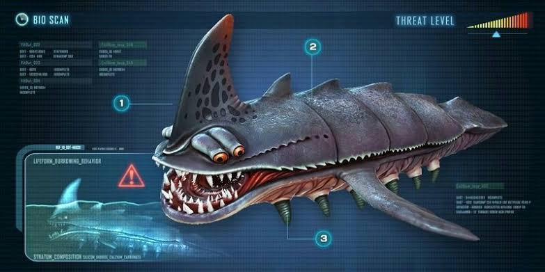
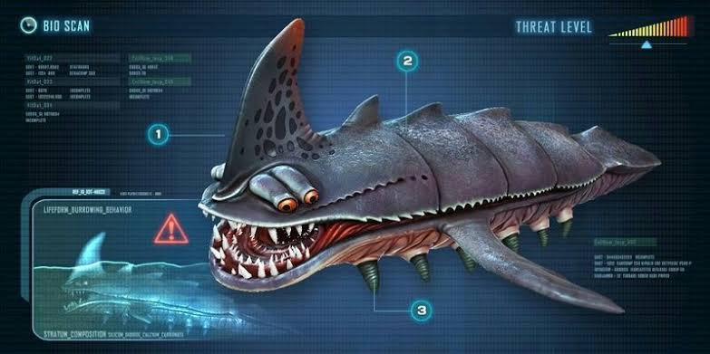

Fauna Marinha em Subnautica
A Vida Alienígena dos Oceanos
Os oceanos do planeta 4546B abrigam uma grande variedade de formas de vida, desde pequenas criaturas herbívoras até gigantescas criaturas predadoras. Cada uma delas desempenha um papel crucial no ecossistema deste mundo alienígena, garantindo o equilíbrio entre espécies.
Herbívoros e Predadores Menores
Entre as criaturas mais comuns estão pequenos peixes herbívoros, como o *Peeper* e o *Bladderfish*. Eles são uma fonte de alimento tanto para os sobreviventes quanto para outros predadores. Predadores menores, como o *Stalker*, caçam presas de médio porte e são conhecidos por sua tendência a acumular objetos metálicos.
Um Vislumbre dos Gigantes
Para além das criaturas menores, existem espécies de proporções gigantescas que dominam as águas. Esses seres são classificados como Leviatãs, e sua presença é tanto fascinante quanto perigosa para quem ousa explorá-los de perto.
Na próxima página, falaremos em detalhes sobre os Leviatãs, criaturas imensas que representam o ápice da cadeia alimentar em Subnautica. Prepare-se para descobrir os gigantes que habitam o fundo do mar!
 
